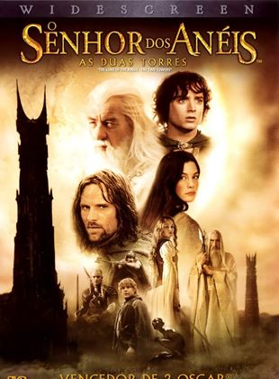

In a fantastic and unique land, a hobbit receives as a gift from his uncle a magical and evil ring that must be destroyed before it falls into the hands of evil. For this, the hobbit Frodo has an arduous path ahead, where he encounters danger, fear and bizarre beings. By his side for the accomplishment of this journey, he can gradually count on other hobbits, an elf, a dwarf, two humans and a wizard, totaling nine beings that form the Fellowship of the Ring.

The Two Towers
The two Towers
After the capture of Merry and Pippy by the orcs, the Fellowship of the Ring is dissolved. Frodo and Sam continue their journey to Mount Doom to destroy the ring and discover they are being pursued by the mysterious Gollum. Meanwhile, Aragorn, the elf and archer Legolas and the dwarf Gimli set out to rescue the kidnapped hobbits and arrive in the realm of Rohan, where King Theoden has fallen victim to a deadly curse from Saruman.
The return of the king
The return of the king
The final showdown between the forces of good and evil fighting for control of Middle-earth's future approaches. Sauron plans a major attack on Minas Tirith, capital of Gondor, which causes Gandalf and Pippin to head there to help the resistance. An army is gathered by Theoden on Rohan, in yet another attempt to stop Sauron's forces. Meanwhile, Frodo, Sam and Gollum continue their journey to Mount Doom to destroy the ring.